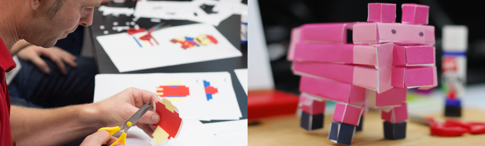
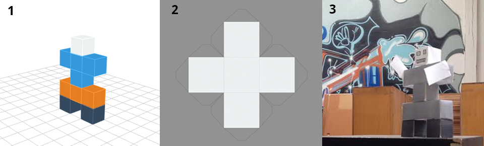

Voxel Builder
Easy cube-based 3D design with DIY 2D/3D printing
Voxel Builder is an open source tool that lets anyone design and edit 3D voxel (cube) models easily, right in their web browser.
How it works
Use the Builder to create and edit voxel (AKA cube) models.

When you are done, export it as a PNG file (from the menu in Builder), like this:

You can manufacture your critter using either a 2D printer or a 3D printer.
2D printer
Visit this page and drop your critter PNG onto it to generate pages. Print the pages so that each layer is a different page on a color printer. Then use scissors and glue to assemble each layer!


3D printer
Visit this page and drop your critter PNG onto it to generate a 3D printable STL file.

The above shows three STL files loaded into MakerWare: unsmoothed, smoothed with surface nets and smoothed with marching cubes.

Here are the 3 variations of Mario printed out by @vladikoff at the Mozilla San Francisco office. You can view more photos from his print here. Thanks, Vlad!
Mikola Lysenko, the designer of the Mario model and author of many of the algorithms in Voxel Builder, also wrote a post about the process of creating the 3D mario.
At this point in time there are over 1400 creations that have been made with Voxel Builder. Any of them can be loaded into the ndarray-stl demo. Here are some good ones:
{kind=link}
{kind=link}
{kind=link}